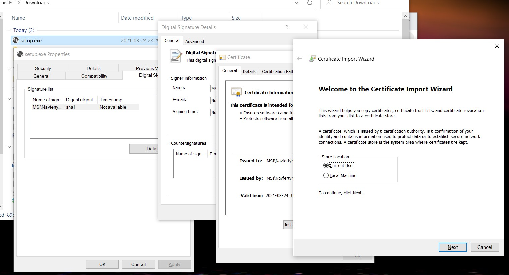

Installation and removal
1
2
Run the installation
Double-click the downloaded setup.exe file and follow the installation wizard.
3
Restart Excel
If Excel was open during installation, restart it. You'll see the new Navferty's Tools tab in the ribbon.
Certificate installation (if needed)
If you encounter a security warning about the certificate:
- Right-click on
setup.exeand select Properties - Go to the Digital Signatures tab
- Select the signature and click Details
- Click View Certificate → Install Certificate
- Choose Local Machine and place it in Trusted Root Certification Authorities

You can remove the certificate after installation, but it will be required for future updates.
Offline install
Every release is built with GitHub Actions, and the full set of installation files is attached to it:
- Open the latest release
- Download the attached
NavfertyExcelAddIn-*.ziparchive - Extract the files to a folder and run the
.vstofile
Installing from a folder on the desktop is recommended: updates are only permitted from the same folder where the add-in was first installed.
After installation, restart Excel. The new Navferty's Tools tab appears in the ribbon.
Removal
Method 1: Windows Settings (recommended)
- Open Windows Settings (Win + I)
- Go to Apps → Installed apps (Apps & features on Windows 10)
- Find Navferty Excel Add-In in the list
- Click Uninstall and follow the prompts
Method 2: Control Panel
- Open Control Panel
- Go to Programs → Programs and Features
- Right-click Navferty Excel Add-In and select Uninstall